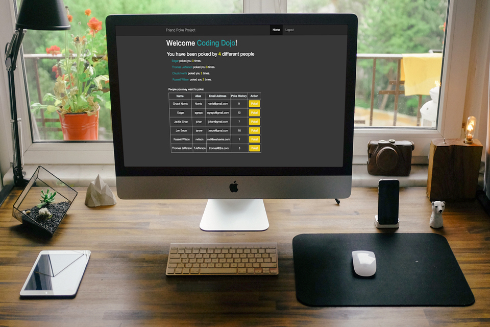
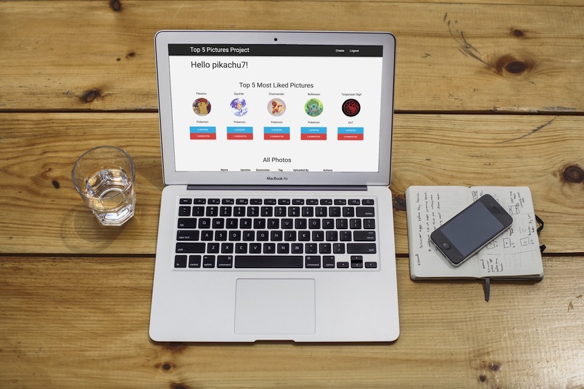
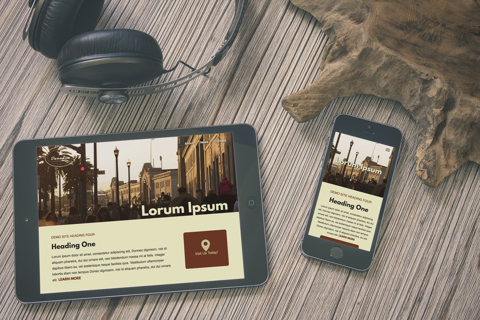

-

-

-

"Just because something doesn’t do what you planned it to do doesn’t mean it’s useless."
– Thomas Edison
ABOUT
My name is Edgar Grepo. I'm a full stack developer eager to build on my front end development skills. Born in Winnipeg, Manitoba and raised in the Seattle area. I practice daily using HTML, CSS, JavaScript, PHP, and Python. I am always eager to learn new technologies!
Having a Bachelor's of Science in Exercise Science, I am always looking for new workouts and ways to be healthier. I enjoy hiking as well, spending lots of time exploring the beautiful Pacific Northwest! Side note; I am also quite the gamer, spending lots of my time in Summoner's Rift :)